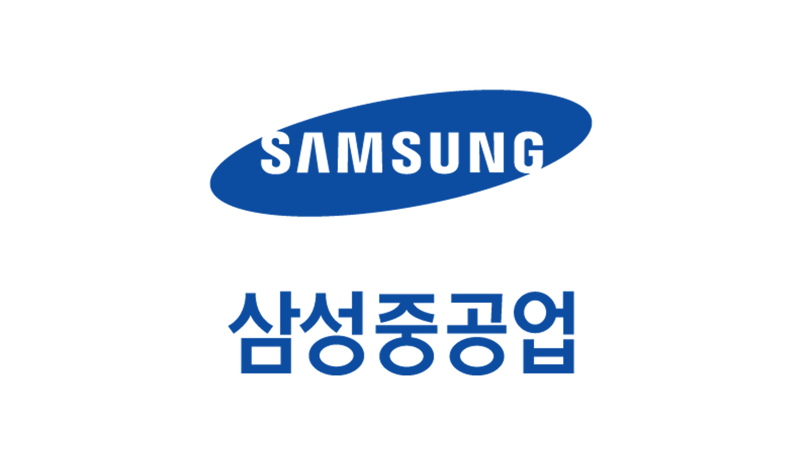
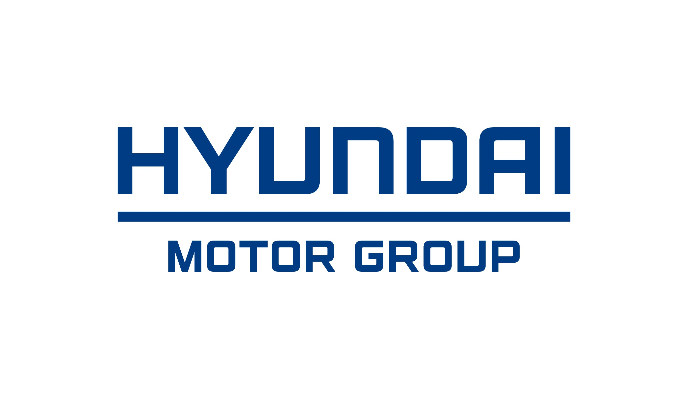
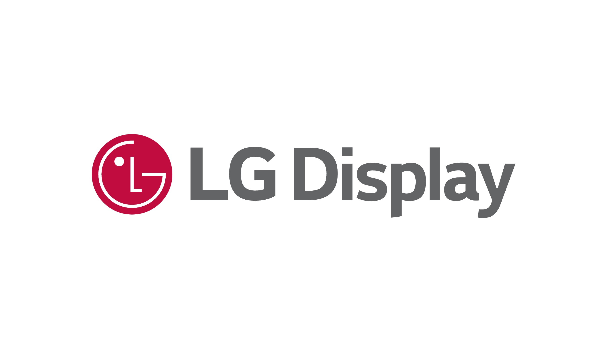
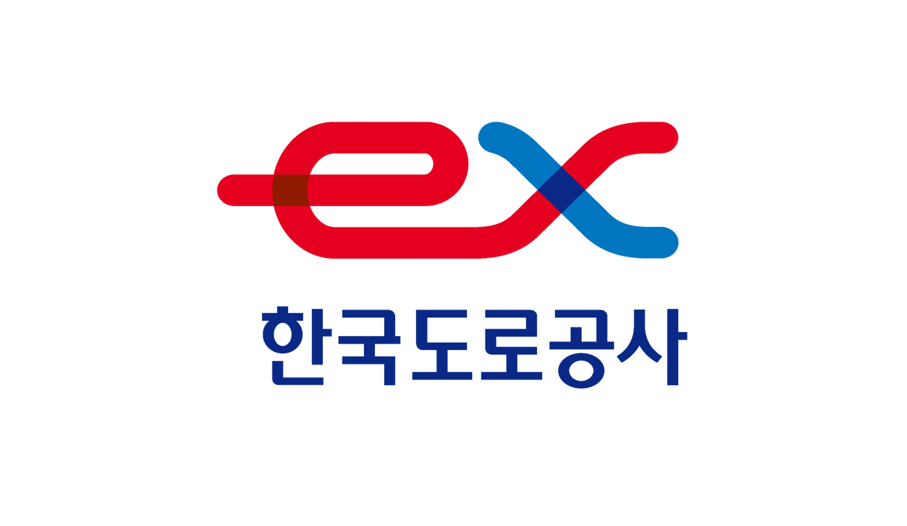
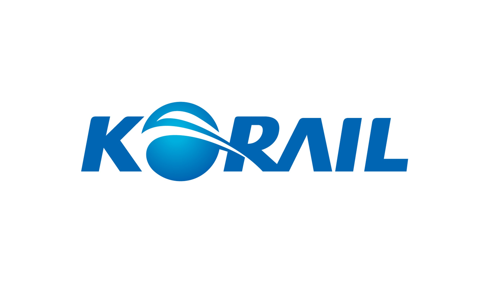

Projects
산업체 협력 및 응용 R&D 프로젝트 Industrial collaborations and applied R&D projects
Narnia Labs 및 KAIST Smart Design Lab에서 AI 연구원으로 수행. conducted as an AI Researcher at Narnia Labs and the Smart Design Lab, KAIST.
진행 중인 프로젝트On-going Projects
완료된 프로젝트Completed Projects

이상치 탐지 모델을 활용한 고장 예측 알고리즘 개발Development of a Battery Failure Prediction Algorithm Based on Anomaly Detection
Feb. 2024 – Mar. 2025GNN기반 충돌해석 예측을 위한 딥러닝 모델링 라이브러리 개발Development of a GNN-Based Deep Learning Library for Collision Analysis Prediction
Sep. 2023 – Dec. 20233D 형상데이터 기반 성능예측 GNN 딥러닝 모델 연구GNN-Based Deep Learning for Performance Prediction from 3D Geometry Data
Jul. 2022 – Jun. 2023
Generative Design과 MeshGraphNet을 활용한 패널 적층 구조 최적화 요소 기술 개발Optimization of Panel Layered Structures Using Generative Design and MeshGraphNet
May. 2022 – Feb. 2023로드휠의 형상 제시를 위한 디자인 생성 가이드라인과 AI 기반 분류 기법 개발Generative Design Guidelines and AI-Based Classification for Automotive Road Wheel Shapes
Jul. 2021 – Jul. 2022
사고위험구간 선정을 위한 고속도로 사고위험도 지표 개발Development of an Expressway Accident Risk Index for Identifying Hotspots
Mar. 2021 – Dec. 2021